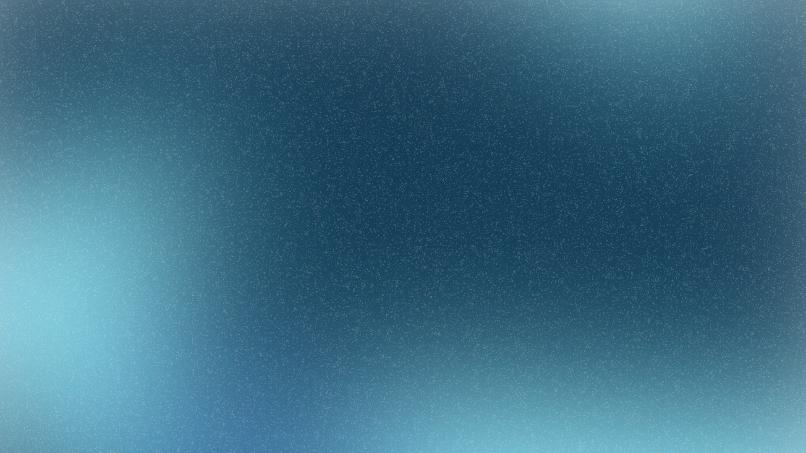
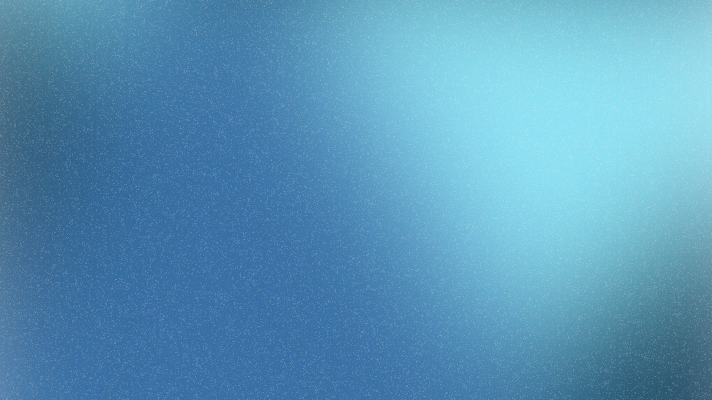

Makeblock is designed to empower creativity, not restrict it. Airblock is a magnetic system of modules and blocks which allow you to build the robot of your dreams.

The modular magnetic system allows you to get up in the air in no time!

Airblock has incorporated the amazing ability of flight with basic engineering and coding!
The only limit is your imagination!
Fly around, have air battles and manuever through obstacles!
Become the next drift king on land, or the sea!
Creep out your friends with this little critter!
In the gentle waters of the tranquil pond, ducks paddle gracefully, their feathers glistening
under the warm sun as they quack cheerfully, creating ripples that dance across the surface while the breeze whispers through
the reeds. Each morning, they gather together, forming a delightful parade of vibrant colors, from the bright yellow of the
ducklings to the rich, deep hues of the adult mallards, all eagerly diving for tasty morsels hidden beneath the shimmering
water, where insects flit and tiny plants sway in the current. As the day unfolds, they explore the lush banks, waddling in
search of the perfect spot to bask in the sun or preen their feathers, ensuring they remain pristine and ready for flight.
The air is filled with the sounds of their playful banter, echoing in harmony with the rustling leaves overhead, as they
chase one another across the pond, splashing and playfully nudging each other in a friendly game of tag. When the sun begins
to set, painting the sky in hues of orange and pink, the ducks gather once more, forming a tight-knit group, their silhouettes
against the vibrant backdrop a picturesque scene of nature's beauty. They share stories of the day’s adventures through a chorus
of quacks, their camaraderie evident as they settle down for the night, nestled together on a cozy patch of grass, dreaming of
the adventures that tomorrow will bring—a new day filled with exploration, friendship, and the simple joys of life by the water.